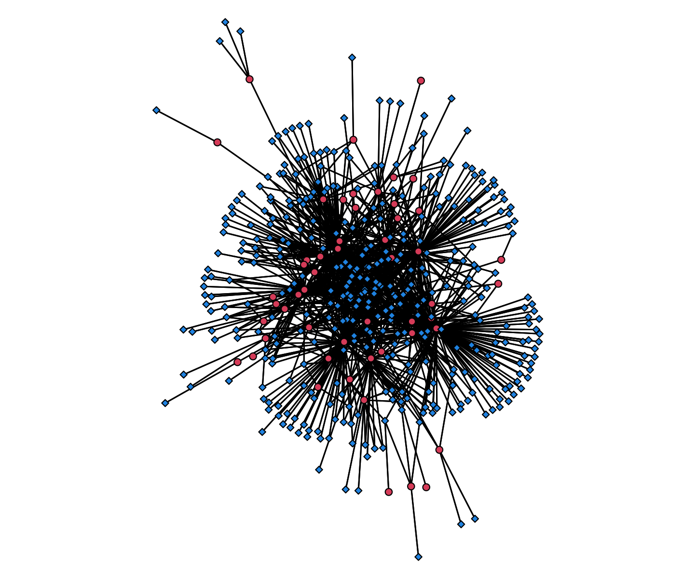

Research Interests
- Statistical Network Modeling
- Social Network Analysis
- Crime and Criminal Violence
- International and Unauthorized Migration
Relevant Links
Please find below a list of (1) my peer-reviewed publications, (2) conference presentations, and (3) open source software packages. Please feel free to reach out with any questions related to the below research outputs. For the most updated list of research outputs, please see my curriculm vitae.
Peer-Reviewed Publications:
Cruz-Jiménez, Lizeth, Kevin A. Carson, James F. Thrasher, Katia Gallegos-Carrillo, Dèsirée Vidaña-Pérez, and Diego F. Leal. 2026. "Social Network Determinants of Cigarette Forgoing and Quit-Related Conversations in a 15-Day Ecological Momentary Assessment Study in Mexico and the US.'' Tobacco Use Insights 19: 1-12. [pdf]
Carson, Kevin A. 2026. "Coyotaje in an Uncertain Social Environment: Prior Coyote Experience as a Form of Migration-Specific Human Capital." Journal of Ethnic and Migration Studies 52(13): 3524–3545. [pdf] [code]
Open-Source Statistical Software:
Carson, Kevin A. 2026. netpanel: Maximum Likelihood Estimation Routines for Panel Network Autocorrelation Models. R package version 0.0.1.
Carson, Kevin A. and Diego F. Leal. 2026. dream: Dynamic Relational Event Analysis and Modeling. R package version 2.1.4.
Recent Conference Presentations:
Carson, Kevin. 2026. “Endogenous Network Mechanisms in the Mexican War of Conquest”, American Sociological Association 121st Annual Meeting, New York City, New York, USA.
Carson, Kevin (with Diego F. Leal, Jeffrey Shen, David R. Schaefer, and Olov Aronson). 2025. “Tie Creation and Maintenance and the Link Between Adolescent Depression and Withdrawal in Friendship Networks”, American Sociological Association 120th Annual Meeting, Chicago, Illinois, USA.
Carson, Kevin (with Diego F. Leal). 2025. “Relational Outcome Models: Some Monte Carlo Results”, American Sociological Association 120th Annual Meeting, Chicago, Illinois, USA.
Carson, Kevin (with Diego F. Leal). 2024. “A Framework for Efficient Computation of Sufficient Statistics in Relational Event Models (REM) Applied to Large Two-Mode Networks”, American Sociological Association 119th Annual Meeting, Montreal, Quebec, Canada.
Carson, Kevin. 2024. “Exploring the Social Dynamics of Undocumented Border Crossings: A Study on Coyote Use and Prior Coyote Experience”, American Sociological Association 119th Annual Meeting, Montreal, Quebec, Canada.